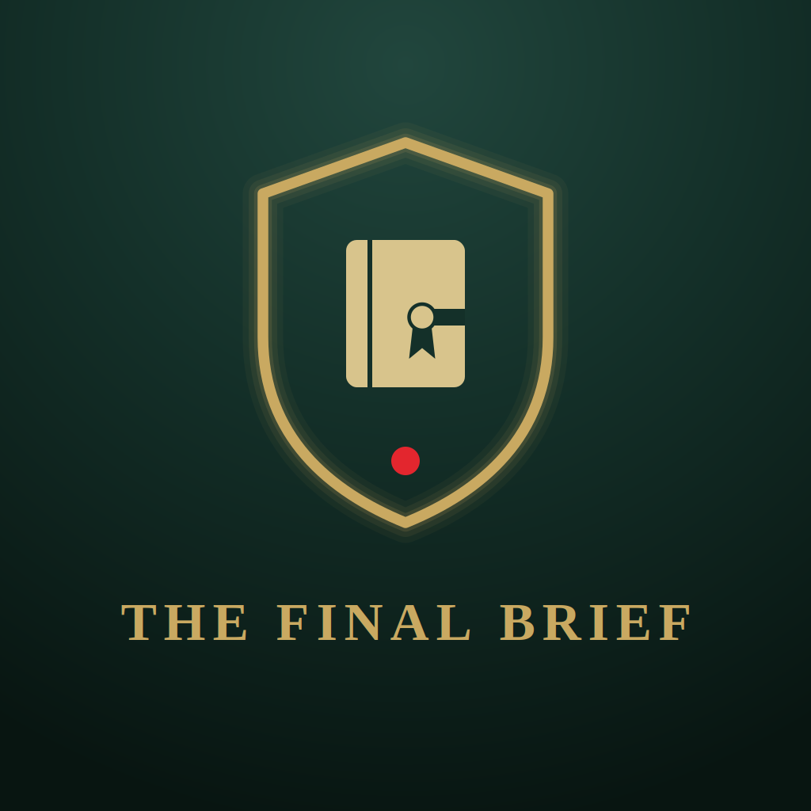

In short: your information stays on your device. The Final Brief, from Bydand Apps, has no server, no account system, and does not collect, sell, or share your data. There is nowhere for your information to go except the device you typed it into.
The Final Brief is a personal organizer for leaving instructions for your family. Depending on how you choose to use it, the app may store information you enter yourself, such as:
The app is designed so that you record where things are, not the secrets themselves. Please do not enter passwords, PINs, or full account numbers.
All information you enter is stored locally on your device only, using your device's own local storage. The Final Brief does not operate a server or cloud database, and none of the information you enter is transmitted anywhere by the app. The app also includes a security setting that prevents it from making network connections, and its fonts and images are built into the app rather than loaded from the internet.
The Final Brief does not request access to your location, camera, photos, or contacts.
Where your browser or device supports it, a microphone button lets you speak instead of type. The speech recognition is performed by your device's or browser's own speech service, not by The Final Brief, and depending on your device that service may process audio over the internet under its provider's own privacy practices. The app does not receive, record, or store any audio. If you would rather not use it, simply do not tap the button. The button may not appear in every version of the app.
You can set an optional PIN that is requested when the app opens. The PIN keeps casual viewers out of the app. It is a privacy screen and does not by itself encrypt the information stored on your device.
You may also choose to unlock with your fingerprint or face. That check is performed by your device's own security system, and The Final Brief never receives or stores your fingerprint or face data. Your PIN always remains available as a backup. If you forget your PIN it cannot be recovered.
The Final Brief lets you create:
These files are created and stored under your control, for example saved to your device or sent through your phone's own Share menu (such as email, cloud storage, or a messaging app). The Final Brief itself does not send them anywhere. Whether and with whom you share them is entirely up to you, and anyone who receives an unprotected file can read it.
The Final Brief does not display advertising, does not use third-party analytics or tracking tools, and does not sell or share information with advertisers or data brokers, because it does not collect information in the first place.
The Final Brief does not integrate with third-party services that would receive your information. Any sharing that happens (for example, emailing a backup file) is started by you, using your device's own apps, and is governed by that app's own privacy practices rather than ours. Tapping a phone number or email address inside the app opens your device's phone or email app.
If you use the web version of the app rather than the version installed from an app store, the website's host receives ordinary connection information (such as an IP address) when the page loads, as any website does. Nothing you enter into the app is sent to the host.
The Final Brief is intended for adults organizing their own personal and family affairs. It is not directed at children, and the app does not knowingly collect information from children, since all information is entered locally by the person using the device.
The Final Brief is a personal organizer. It is not a will, trust, or any other legal document, and it does not provide legal, financial, or medical advice. Writing a wish in the app does not make it legally binding, and the app does not replace a will or other legal paper. Please speak with a qualified attorney about your estate plan.
Because your information is stored only on your device and nowhere else, you are responsible for making sure it can be reached when it is needed. If your device is lost, damaged, has its storage cleared, or the app is uninstalled without a backup, readable copy, or printed copy having been made, your information cannot be recovered; the developer has no copy of it and no way to restore it, for you or for anyone else. Your family does not need this app to read a printed copy or a readable copy, and we encourage you to make one and to tell your family where it is.
If this privacy policy changes, the updated version will be posted at this same page with a revised "Last updated" date.
Questions about this privacy policy can be directed to: bydandapp@gmail.com